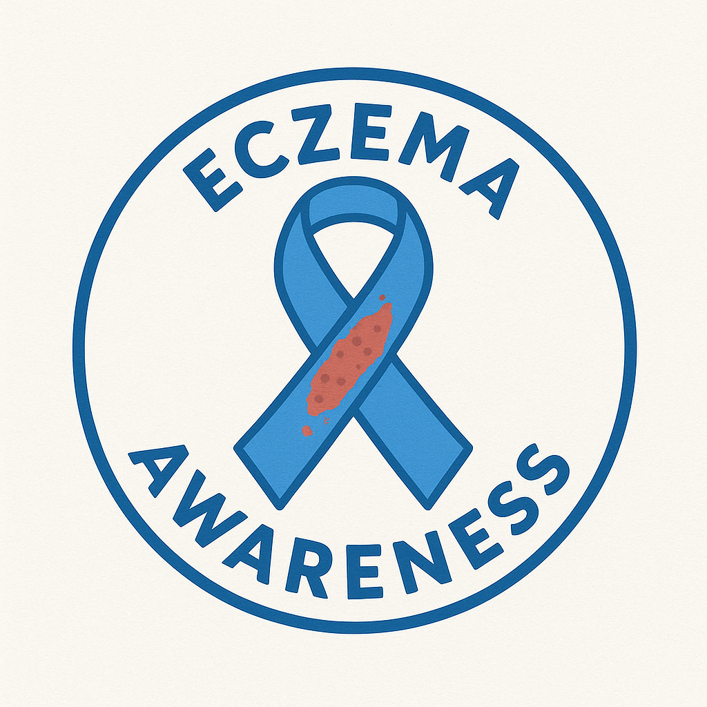
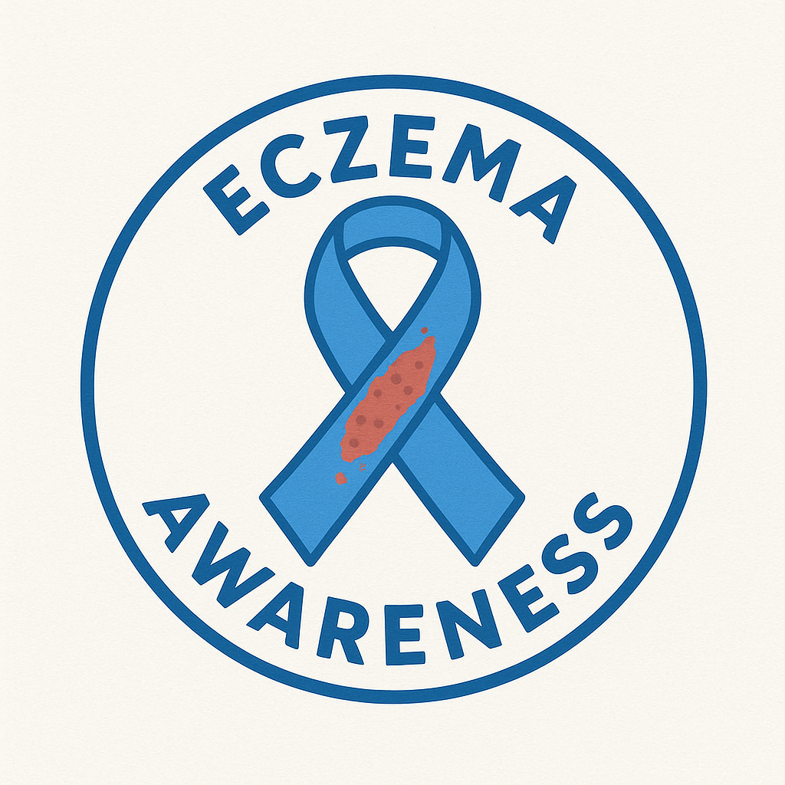

Greetings! We are Ecz-care. Our purpose is to further spread awareness of Eczema,
also mainly known as Atopic Dermatitis. Eczema is a debilitating, inflammatory skin disease
that can take a toll on both a person's physical and mental health.
We cater to those who especially suffer from eczema themselves by encouraging them to take
advantage of the resources posted in the self-advocacy tab. We also encourage people to
stand up for others who need assistance.
In the future, we hope to boost funding not just for eczema research but also for other
conditions such as asthma.

 
